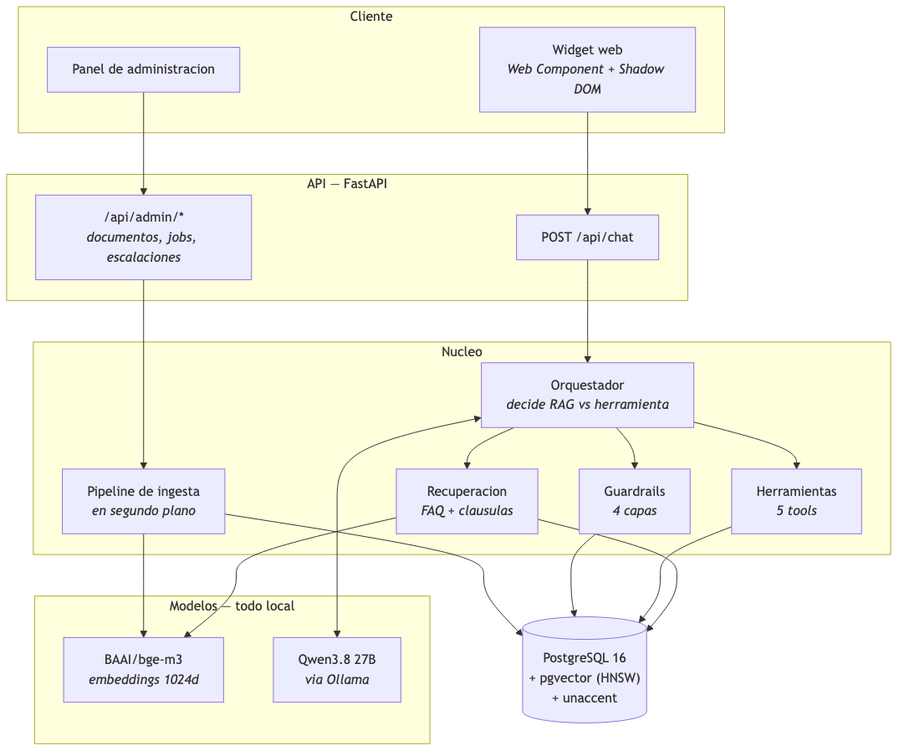
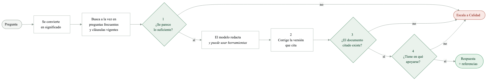
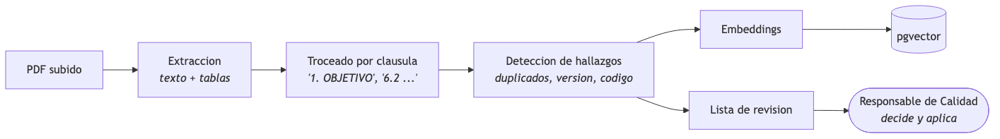
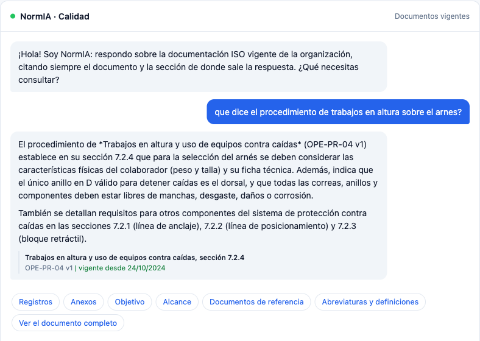
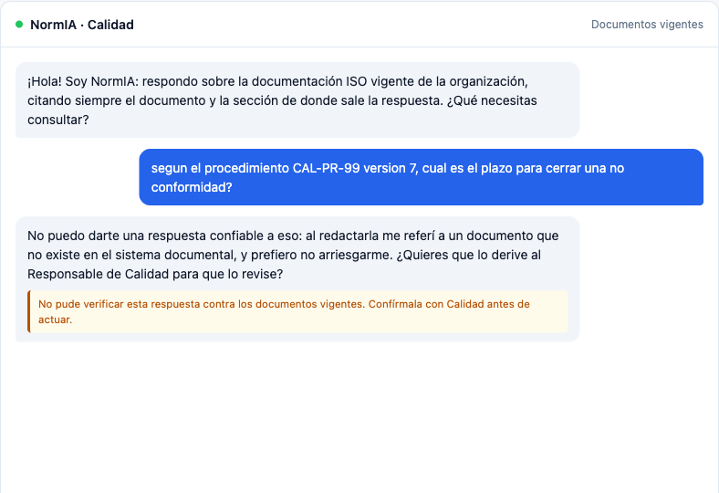
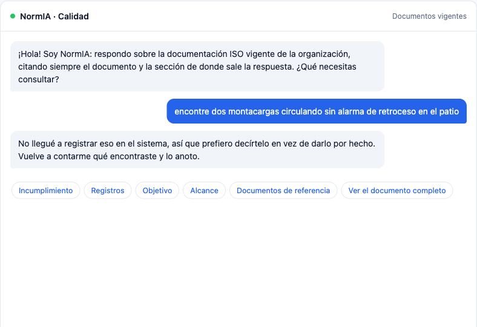
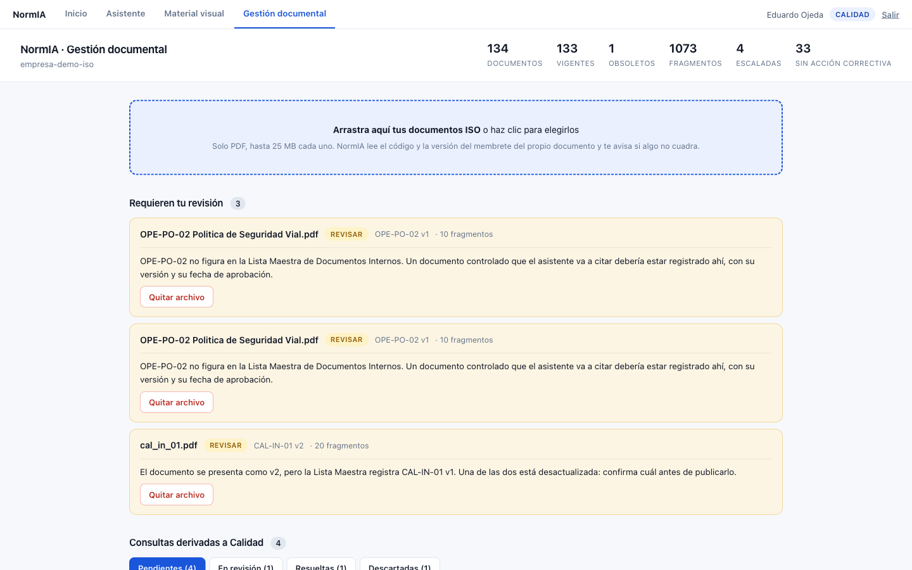
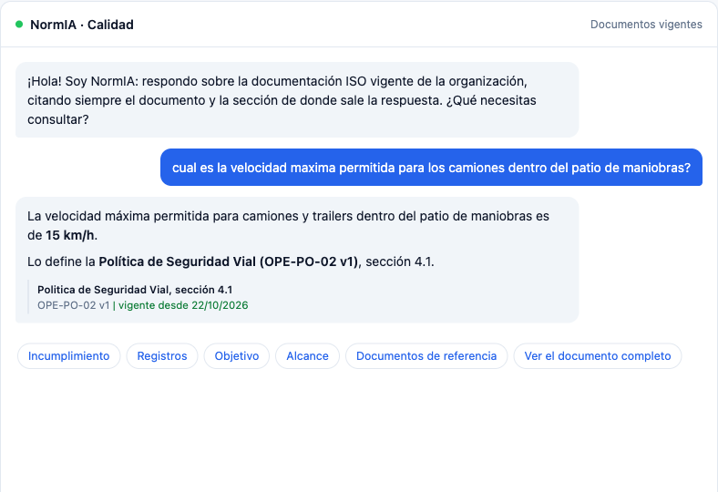
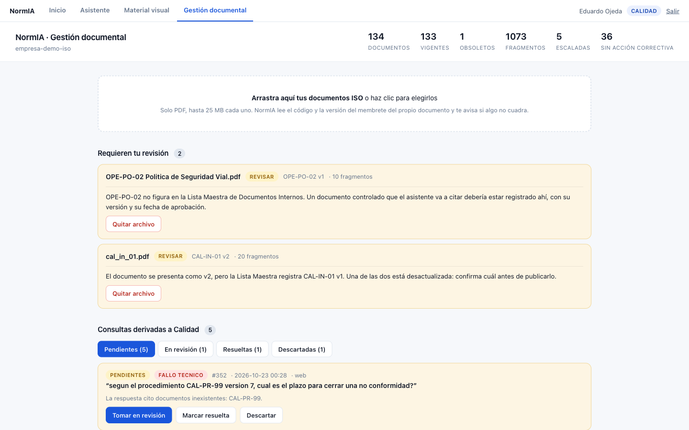
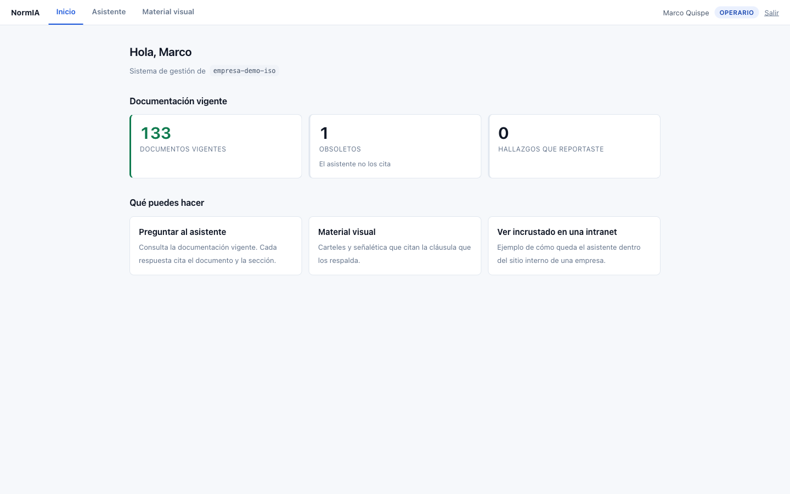

Diploma AI Engineer · DMC Institute · Proyecto Integrador
Sistema conversacional con recuperación aumentada (RAG), agente de herramientas con efecto real sobre la base de datos, fine-tuning con QLoRA y generación multimodal, sobre el sistema de gestión de la calidad de una empresa de logística. Ejecutado íntegramente en infraestructura propia: ningún documento sale de la máquina.
Este informe describe el problema, la metodología, la arquitectura, los resultados medidos y las limitaciones del prototipo. Todas las cifras provienen de ficheros del repositorio o de mediciones reproducibles indicadas en cada caso.
Contenido
En una organización certificada bajo ISO 9001, consultar un procedimiento exige saber tres cosas antes de leer nada: en qué documento está la respuesta, cuál es su versión vigente y en qué cláusula. Hoy eso se resuelve preguntándole a una persona del área de Calidad; cuando esa persona no está, se resuelve adivinando. Actuar sobre una versión derogada no es un despiste: es una no conformidad en auditoría.
NormIA es un asistente conversacional que responde preguntas sobre la documentación vigente citando siempre código, versión y sección, y que no inventa: cuando no tiene respaldo documental, lo dice y ofrece derivar la consulta al Responsable de Calidad. Además registra no conformidades y sus acciones correctivas (ciclo CAPA), detecta inconsistencias al ingerir documentos y produce material de concienciación con la cláusula que lo respalda.
La tesis del proyecto no es «un chatbot que responde» sino trazabilidad auditable. Por eso el diseño combina un modelo de lenguaje con una capa de controles deterministas que pueden descartar una respuesta ya redactada. Medido sobre un banco de 12 consultas reales, el modelo por sí solo acierta 1; con recuperación aumentada acierta 12 de 12 y no cita ningún documento inexistente.
Todo corre en una sola máquina, sin servicios externos: el modelo de lenguaje, los embeddings y la generación de imágenes son locales. No es una optimización sino la condición de partida, porque un sistema de gestión contiene procedimientos internos y organigramas que no pueden viajar a una API de terceros.
ABISERVI es una empresa peruana de logística con un sistema de gestión de la calidad (SGC) certificado. Su documentación controlada comprende 132 documentos vigentes en 12 áreas (manuales, políticas, procedimientos, instructivos, formatos, planes, organigramas y listas maestras) que suman 1 043 cláusulas numeradas. La unidad de respuesta casi nunca es «el documento»: es una cláusula concreta dentro de él.
CAL-IN-01 figura como v1 en la lista pero
imprime v2 en su membrete; varios formatos referenciados por procedimientos vigentes no están
registrados.Un buscador clásico devuelve documentos; lo que la persona necesita es una respuesta en lenguaje natural con su referencia exacta. Un modelo de lenguaje resuelve la redacción, pero introduce el riesgo opuesto: responder con seguridad algo que no está en ningún documento. El problema de negocio, por tanto, no es «responder» sino responder solo cuando hay respaldo y demostrar cuál es. Eso define la arquitectura: el modelo redacta, pero no decide si la respuesta sale.
| Objetivo | Cómo se verifica |
|---|---|
| Responder sobre documentación vigente, citando siempre la fuente | Banco de 12 consultas reales (scripts/benchmark_models.py) con la respuesta
correcta verificada leyendo el documento. Un documento marcado obsoleto deja de citarse en el
mismo instante. |
| No inventar nunca un documento ni una acción | Cada código citado se comprueba contra la base; cada versión citada se corrige contra la real; cada ID de hallazgo o acción correctiva afirmado debe existir. Si no, la respuesta se descarta. |
| Cerrar el ciclo de no conformidad | Un hallazgo registrado exige responsable y fecha (NOT NULL en base) y queda
visible en el panel de Calidad con los días que faltan. |
| Producir el material de concienciación que la norma exige | Cláusulas 7.2, 7.3 y 7.4 de ISO 9001 (competencia, toma de conciencia, comunicación). Cada pieza cita la cláusula que la respalda y la cita se valida contra el catálogo. |
| Que ningún documento salga de la organización | Modelos locales (LLM, embeddings, difusión). Restricción de partida, no optimización. |
Los criterios son medibles y automatizados: 436 tests cubren guardrails, herramientas, enrutado, ingesta, consentimiento, autenticación y seguridad. Un objetivo que no se puede verificar no está en la lista.
El proyecto se desarrolló entre el 27 de agosto y el 22 de octubre de 2026 en 70 commits, con el SGC real del cliente desde el primer día (recomendación explícita de la guía: elegir un problema cuyos datos estén disponibles desde el inicio). Se siguieron cuatro principios:
docs/linea-base.md) antes de entrenar ningún adaptador: un fine-tuning sin
línea base no se puede defender.| Fase | Trabajo | Evidencia |
|---|---|---|
| 1. Ingesta y RAG | Extracción de PDF con tablas, troceado por cláusula, embeddings locales, búsqueda vectorial con umbral, cruce contra la Lista Maestra. | app/core/rag/, app/core/docs/ |
| 2. Orquestador y guardrails | Enrutado de turnos, function calling, cuatro controles bloqueantes, traza de auditoría por turno. | app/core/orchestrator.py, app/core/guardrails/ |
| 3. Agente y CAPA | Nueve herramientas, registro de hallazgos y acciones correctivas, escalación con consentimiento. | app/core/agents/tools.py |
| 4. Fine-tuning | Dataset de 584 ejemplos verificados, QLoRA en 4 bits, evaluación sobre casos excluidos del entrenamiento. | data/finetune/, docs/comparacion-lora.md |
| 5. Generativa de imagen | SDXL con refinador, prompt juzgado por el LLM, composición del logotipo real, validación de la cláusula citada. | app/channels/imagen_adapter.py |
| 6. Producto | Autenticación con tres roles, aislamiento por cliente, panel de Calidad, pantallas de inicio, asistente y material visual. | app/channels/, frontend-widget/ |
Cuatro capas en una sola máquina. El cliente es un Web Component con Shadow DOM que se
incrusta en cualquier intranet sin heredar ni imponer estilos; la API es FastAPI; el núcleo
contiene el orquestador, la recuperación, las herramientas, los guardrails y el pipeline de
ingesta; los modelos (Qwen3.8 27B vía Ollama y BAAI/bge-m3) corren en local; y
PostgreSQL 16 con pgvector guarda documentos, cláusulas, conversaciones, hallazgos, acciones
correctivas, escalaciones, usuarios y la traza de auditoría en un solo motor. El prototipo corre en una sola máquina; el mismo código se despliega en un servidor para n usuarios cambiando configuración, no código (sección 15).

| Capa | Elección | Por qué esa |
|---|---|---|
| Backend | Python 3.12, FastAPI, SQLAlchemy | Estándar, fácil de probar. Endpoints síncronos despachados a hilos porque SQLAlchemy es síncrono. |
| Datos | PostgreSQL 16 + pgvector (HNSW) + unaccent | Relacional y vectorial en un motor; búsqueda insensible a acentos (los usuarios escriben «clausula»). |
| LLM | Qwen3.8 27B, FP4, Apache 2.0, vía Ollama | Licencia comercial limpia, sin coste por consulta. Elegido midiendo contra alternativas (scripts/benchmark_models.py). El cliente habla el protocolo compatible con OpenAI: vLLM o Groq entran cambiando tres variables. |
| Embeddings | BAAI/bge-m3, 1 024 dim, MIT | Multilingüe, local, sin clave de API. |
| Fine-tuning | QLoRA 4 bits sobre Qwen3-4B con MLX | Entrena el 0,37 % de los parámetros en una máquina de escritorio. |
| Imagen | SDXL base + refinador, Diffusers, MPS | El modelo dibuja la escena; el logotipo real se compone encima. Licencia OpenRAIL++-M, con restricciones de uso propagadas al usuario (condiciones.html). |
| Cliente | Web Component + Shadow DOM, sin framework | Incrustable en la intranet; sin fuentes web porque el producto corre sin internet. |


CÓDIGO,
VERSIÓN, REVISIÓN), no del nombre del archivo, y se cruza contra la Lista
Maestra. El sistema avisa; no modifica los documentos del cliente.Troceado por cláusula, no por tamaño. En un documento controlado la unidad de sentido es la cláusula («6.1.2», «7.4 Recepción y conformidad»). Trocear así es lo que permite citar «sección 7.2.4» con trazabilidad. Las tablas se extraen como texto estructurado (los tiempos de atención de TI viven en una tabla).
Dos búsquedas en paralelo. La pregunta se vectoriza una vez y se compara con el banco de 730 preguntas frecuentes verificadas (generadas desde las cláusulas y comprobadas una a una contra su texto) y con las cláusulas de documentos vigentes. Un documento marcado obsoleto desaparece del índice de búsqueda sin reindexar nada: es un filtro en la consulta.
Umbral absoluto y margen relativo. ORDER BY distancia LIMIT k siempre devuelve
algo, por irrelevante que sea. El umbral (RAG_MAX_DISTANCE = 0,527, calibrado con
scripts/calibrate_threshold.py) más un margen relativo del 8 % sobre el mejor
resultado convierten la búsqueda en un guardrail: sin contexto suficiente, el modelo no
redacta.
Carga directa de sección. Si el usuario pide «la sección 6.2 del COM-PR-01», no se pasa por el vector: se carga la cláusula exacta.
Traza de auditoría. Cada turno guarda qué se recuperó, a qué distancia, qué herramienta
se llamó y si la respuesta quedó fundamentada (messages.retrieval_debug). Es lo que
permite reconstruir, meses después, por qué el asistente dijo lo que dijo.
Cinco controles pueden descartar una respuesta ya redactada. Todos son código, no instrucciones al modelo, y cada uno existe porque se observó el fallo que evita:
| Control | El fallo que lo motivó | Qué hace |
|---|---|---|
| 1. Umbral semántico | Sin un mínimo de parecido, la búsqueda siempre devuelve algo. | Sin contexto, no se redacta: se ofrece derivar. |
| 2. Versión citada | Escribió «STI-PO-01 v1» cuando el documento está en v2, contradiciendo su propia ficha de fuentes. | Corrige la versión contra la real y lo anota en la traza. |
| 3. Código citado | Citó PROC-CAL-04, que no existe: lo copió del ejemplo de formato de su propio prompt. | Un código inexistente invalida la respuesta entera. |
| 4. Fundamentación | Prometía derivar a Calidad sin que se registrara nada; se contaron 39 escalaciones sin registro. | La derivación existe en base o no se anuncia. |
| 5. Registro afirmado | Respondió «la acción correctiva quedó registrada con el ID 100» sin haber ejecutado ninguna herramienta; la última acción era la 9. | Todo ID de hallazgo o acción afirmado se busca en la base. Si no está, se sustituye la respuesta. |
Por qué deterministas. El modelo local a veces escribe la llamada a herramienta como texto en vez de emitirla; el turno «funciona», no hay error, y la herramienta nunca se ejecuta. Un control que dependa de que el modelo se acuerde de algo desaparece en silencio justo cuando hace falta. Por eso el consentimiento para derivar, la verificación de citas y la de registros no son herramientas: son código que se ejecuta siempre.
Consentimiento antes de derivar. Nada entra en la bandeja de Calidad sin que el usuario diga que sí. Toda respuesta que deje una propuesta de derivación abierta termina con la misma pregunta, venga de un guardrail o de una herramienta, y el turno siguiente se resuelve comprobando eso. Antes de este control la bandeja acumuló 306 consultas que nadie había pedido derivar; una bandeja así se deja de mirar.
Otros controles previenen antes de llegar ahí: filtro de alcance con suelo determinista y juicio del modelo para el material visual, detección de inyección de prompt en la escena, recuperación de llamadas a herramienta escritas como texto, cortacircuitos ante fallos del LLM, límite de peticiones por IP y tiempo máximo por consulta.
No es un enrutador de intenciones: las nueve herramientas se exponen por function calling y el modelo elige. Cuatro de ellas tienen efecto real sobre la base de datos.
| Herramienta | Qué hace | Efecto |
|---|---|---|
| buscar_documentos | «¿Tienen políticas de TI?»: consulta el catálogo por título, código y área. | lectura |
| leer_documento | Resume un documento completo y ofrece navegar sus secciones. | lectura |
| register_finding | Registra una no conformidad con severidad y área. | escribe |
| ampliar_hallazgo | Añade detalle a un hallazgo ya registrado. | escribe |
| registrar_accion_correctiva | Cierra el ciclo CAPA: exige acción, responsable y fecha; deduplica. | escribe |
| get_capa_status | Estado de las acciones correctivas de un hallazgo. | lectura |
| escalate_to_quality | Propone la derivación al responsable humano y la deja registrada, pendiente de confirmación. | escribe |
| describir_capacidades | Responde sobre sí mismo sin consultar el SGC. | — |
| generar_material_visual | Prepara un cartel con respaldo documental y lo entrega a la página de material visual. | — |
El ciclo CAPA, en un hilo. El operario cuenta lo que vio; el agente lo clasifica (menor, mayor, observación), lo registra y pregunta quién se encargará y para cuándo. Con esos dos datos registra la acción correctiva y el hallazgo pasa a «en revisión». La fecha relativa («antes del 15 de noviembre») se interpreta con la fecha del día inyectada en el prompt: sin ella el modelo devolvía fechas del año anterior y la acción nacía vencida.
El objetivo del fine-tuning no era que el modelo «supiera» el SGC (eso lo resuelve la recuperación) sino que respondiera en el formato del producto: cita con código, versión y sección; llamada a herramienta como tool call y no como texto; negativa con escalación cuando no hay respaldo.
584 ejemplos ensamblados de lo que el proyecto ya tenía verificado, no redactados a mano
(scripts/build_finetune_dataset.py):
| Familia | Ejemplos | Qué enseña |
|---|---|---|
| cita | 400 | Responder con respaldo y citar código, versión y sección (de las 730 FAQ verificadas; recortada para no ahogar a las demás). |
| herramienta | 135 | Emitir la llamada como tool call, no escribirla en el texto. |
| escalacion | 31 | Negarse y llamar a escalate_to_quality sin respaldo. |
| fantasma | 14 | No citar un documento inexistente (los 14 rechazos documentados del FAQ). |
| social | 4 | Saludar sin escalar a Calidad. |
Reparto 468 / 57 / 59 (train / valid / test) por grupo de cláusula de origen, no por ejemplo: dos preguntas de la misma cláusula comparten casi todo el prompt y separarlas convertiría la validación en una medida de memorización. Las 12 preguntas del banco de pruebas quedan fuera de las tres particiones.
QLoRA sobre mlx-community/Qwen3-4B-4bit con MLX en Apple Silicon:
0,365 % de parámetros entrenables (14,7 M de 4 022 M), 400 iteraciones, tasa de
aprendizaje 1e-4, memoria pico 11,3 GB. Pérdida de validación de 2,259 a 0,221; pérdida en
test 0,284 (perplejidad 1,33). Registro completo en docs/entrenamiento.log.
Sobre las 12 consultas excluidas del entrenamiento, el modelo base acierta 11 de 12 y el
afinado 12 de 12 (docs/comparacion-lora.md, con las respuestas completas de
ambos). Lo que cambia no es tanto el acierto como la forma: la respuesta pasa de una
mediana de 1 014 a 160 caracteres y cita de forma más consistente. Es un resultado
independiente y medido, como pide la guía, y se presenta separado del que aporta el RAG.
Un efecto secundario medido: el fine-tuning empeoró la emisión de llamadas a herramienta del 100 % al 75 % en una de las mediciones. Entrenar una llamada como texto la empuja hacia su forma de texto. El control de «registro afirmado» de la sección 7 existe en parte por esto.
ISO 9001 pide formar y comunicar (cláusulas 7.2, 7.3 y 7.4). El material de concienciación no es decoración: da servicio a tres cláusulas del estándar. NormIA genera carteles y señalética que citan la cláusula que los respalda, y la cita se valida contra el catálogo: no se puede imprimir un respaldo que no existe.
condiciones.html las muestra al usuario. En
producción se sustituiría por FLUX.1 (Apache 2.0).| Aspecto | Implementación |
|---|---|
| Autenticación | hashlib.scrypt para contraseñas y cookie de sesión firmada con HMAC-SHA256 (httpOnly, 12 h). Sin dependencias externas. |
| Tres roles | operario (consulta, reporta, ve sus hallazgos), calidad (gestión documental, bandeja, CAPA), admin. Todo /api/admin/* exige rol de Calidad a nivel de router: cuatro intentos de un operario devuelven 403. |
| Aislamiento por cliente | El tenant se toma de la sesión, nunca del cuerpo de la petición. Con PUBLIC_TENANT_ID, el anónimo solo ve el corpus público. |
| Límite de peticiones | Ventana deslizante por IP. La cabecera de reenvío solo se lee con TRUSTED_PROXY declarado; medido: sin eso, 60 peticiones con la cabecera falseada y 0 bloqueadas. |
| Resiliencia | Cortacircuitos ante fallos del LLM, reintentos acotados, tiempo máximo de 60 s, incidentes con número de referencia visible al usuario. |
| Datos | Ningún documento ni consulta sale de la máquina. Sin fuentes web ni CDN en la interfaz. |
Tres mediciones distintas, con sus ficheros de origen. No deben mezclarse: responden a preguntas diferentes.
Modelo Qwen3-4B-4bit sobre las 12 consultas del banco (docs/tres-estados-empresa-demo-iso.md):
| Métrica | Sin RAG | Con RAG | RAG + LoRA |
|---|---|---|---|
| Acierta en conjunto | 8 % | 100 % | 100 % |
| Cita el documento correcto | 25 % | 100 % | 100 % |
| Usa la herramienta correcta | 0 % | 100 % | 100 % |
| Escala cuando debe | 75 % | 100 % | 100 % |
| Sin citas inventadas | 92 % | 100 % | 100 % |
La primera columna es la razón de ser del proyecto: un modelo sin los documentos delante
responde con seguridad y se inventa el código del procedimiento (STI-MA-02, que
no existe en el SGC).
qwen3.8:27b-mlx con RAG, congelada el 24/09/2026 antes de cualquier fine-tuning
(docs/linea-base.md): cita el documento correcto 88 %, acierta la cláusula 100 %,
sin citas inventadas 100 %, latencia mediana 14,8 s. Su punto débil medido era la herramienta
correcta (50 %), que es lo que motivó el dataset de la familia herramienta.
Base 11 / 12 frente a LoRA 12 / 12 sobre las consultas excluidas del entrenamiento, con latencia mediana 7,5 s frente a 7,9 s: la mejora no penaliza el tiempo de respuesta.
436 tests en 19 ficheros, 3 s de ejecución. Los de mayor peso: enrutado (46), consentimiento (44 + 9), herramientas (36), citas (27), troceado (27), imágenes (26), autenticación (25), fundamentación (23), seguridad (18), CAPA (16). Varios tests nacieron de un defecto encontrado en vivo y escriben en su docstring el incidente que reproducen.
Capturas del ensayo completo del 22 de octubre de 2026 sobre el SGC real, con sesión del Responsable de Calidad.

OPE-PR-04 v1, sección 7.2.4,
con la fecha desde la que está vigente. Los chips de debajo navegan a otras secciones del mismo documento.


OPE-PO-02 no figura en la Lista Maestra. Debajo, la cola de consultas
derivadas con su motivo.


/api/admin/*
devuelven 403.Se enumeran las que un tribunal preguntaría primero, incluidas las encontradas en el ensayo final. Ninguna está maquillada.
COM-PR-01 v3,
sección 6.1.2. El documento existe, la sección existe, pero dice «una cotización» y no
hay umbral alguno: la búsqueda trajo una plantilla en blanco titulada «Cotización» y el modelo
rellenó el hueco con conocimiento general. El sistema lo detecta (evento
citation_not_retrieved: el código citado no estaba entre lo recuperado) pero hoy
solo lo registra. Conectarlo como bloqueo es el siguiente cambio, y el más importante.tool_choice,
así que no se puede forzar.Lo que el proyecto demuestra. Un modelo de lenguaje local, sin los documentos delante, acierta 1 de 12 consultas sobre un SGC real e inventa códigos de procedimiento. Con recuperación por cláusula, umbral semántico y una capa de controles deterministas, acierta 12 de 12 y no cita nada que no exista. El fine-tuning, medido por separado sobre casos no vistos, mejora el formato sin penalizar la latencia. El agente cierra el ciclo de no conformidad con registros reales, verificables en la base, y nada se deriva a Calidad sin consentimiento.
Lo que aprendimos. Los fallos más caros no fueron de precisión sino de promesa incumplida: el sistema afirmando que había derivado, registrado o generado algo que no existía. Todos se resolvieron del mismo modo, verificando el hecho contra la base en vez de confiar en la redacción. Y los defectos más importantes se encontraron ensayando el flujo completo en el navegador, no en los tests: la cobertura automatizada no sustituye el uso real.
El objetivo de producto es un servidor al que consulten decenas o cientos de personas, no un portátil. Lo que hace eso viable ya está resuelto: PostgreSQL con pgvector escala sin tocarlo, la sesión es una cookie firmada sin estado en el servidor, el cliente del LLM habla el protocolo de OpenAI (vLLM entra con tres variables) y los guardrails son código determinista que corre igual en cada worker.
Lo que hoy vive en memoria del proceso y hay que sacar fuera para tener varios workers:
| Pieza | Hoy | Para n usuarios |
|---|---|---|
| Límite de peticiones | Ventana deslizante en RAM del proceso | Redis: con cuatro workers, cada uno llevaría su propia cuenta. |
| Cortacircuitos del LLM | En el cliente, por proceso | Redis, por la misma razón. |
| Ingesta de PDF | BackgroundTasks dentro de la API | Cola de trabajos: un PDF grande no debe ocupar un worker web. |
| Generación de imagen | Síncrona, 44 s bloqueando un hilo | Worker aparte o serverless; la API devuelve un ticket. |
| Servidor del modelo | Ollama: atiende en serie e ignora tool_choice | vLLM en Linux con GPU: lotes continuos y llamadas a herramienta forzadas. No corre en Apple Silicon. |
Nada de esto es un rediseño: es mover estado fuera del proceso. El orquestador, las herramientas y los controles no cambian.
Qwen3 27B cuantizado a 4 bits ocupa unos 16 GB de GPU; la concurrencia típica de 100 usuarios reales es de 5 a 10 consultas simultáneas, así que una GPU basta.
| Opción de servidor | Coste aproximado | Capacidad esperada | Dónde viven los datos |
|---|---|---|---|
| Servidor propio con una GPU de 48 GB (L40S) | 8–15 k$, una vez | 10–20 consultas simultáneas | en la empresa |
| Nube privada del cliente, instancia con GPU de 48 GB | 1 200–1 800 $/mes | 10–20 simultáneas | VPC del cliente |
| Modelo menor (Qwen3 8B) en GPU de 24 GB (L4) | ~500 $/mes | similar; habría que repetir el banco | VPC del cliente |
Lo que no está medido. Las capacidades de esta tabla son el orden esperable para esa GPU con vLLM, no una medición de este proyecto: no se ha servido este modelo con vLLM ni se han hecho pruebas de carga (limitación 9). Presentar ese número como medido sería justo lo que el proyecto critica. El coste de la generación de imagen es despreciable frente al del LLM: el material visual es de volumen mínimo y puede pagarse por segundo de GPU.
| Paso | Por qué |
|---|---|
| Bloquear la cita no recuperada | El detector existe y registra el evento; falta tratarlo como bloqueo, igual que la cita inexistente. Es la limitación 2. |
| Servir con vLLM en vez de Ollama | Medido: Ollama ignora tool_choice y atiende en serie. Implica un servidor Linux con GPU: vLLM no corre en Mac. |
| Cola para lo lento | Generar una imagen bloquea un hilo 44 s; la ingesta de PDF, igual. |
| Estado compartido en Redis | Cortacircuitos y límite de peticiones por proceso: con dos instancias, cada una lleva su cuenta. |
| OCR y visión para lo escaneado | Recupera las 24 cláusulas que hoy se pierden. |
| Norma agnóstica | Campo de norma por cliente para que ninguna pantalla fije «ISO 9001»: el mismo producto sirve a 14001, 45001 o 27001. |
Lo que no cambiaría: el modelo en local. Para un sistema de gestión certificado eso no es una ventaja técnica; es la condición para que el proyecto exista.
Requisitos: macOS o Linux, Docker, Python 3.12 (uv lo instala), Ollama con el modelo
indicado y unos 24 GB de memoria para el LLM. La generación de imágenes necesita 13 GB
adicionales durante la pieza.
git clone https://github.com/klauzirrazabal-max/normia-chatbot-iso.git cd normia-chatbot-iso cp .env.example .env # revisa LLM_MODEL, DATABASE_URL, ADMIN_API_KEY docker compose -f docker/docker-compose.yml up -d # PostgreSQL 16 + pgvector uv sync # Python 3.12 y dependencias con lockfile ollama pull qwen3.8:27b-mlx uv run python scripts/seed_demo_tenant.py --tenant demo-publica --name "Empresa Demo" uv run python scripts/ingest_docs.py --tenant demo-publica # troceado por cláusula + embeddings uv run python scripts/load_registry.py --tenant demo-publica # Lista Maestra uv run python scripts/crear_usuario.py calidad@empresa.com --rol calidad uv run uvicorn app.main:app --port 8000 # http://localhost:8000 → acceso, inicio, asistente, material visual, gestión documental uv run pytest -q # 436 tests
El repositorio incluye un SGC sintético (scripts/generate_demo_corpus.py) para que
el proyecto se pueda clonar y ejecutar: los documentos reales de un cliente son información
controlada y no entran en git. El README.md (913 líneas) documenta cada decisión,
el umbral de distancia, la comparación de modelos y la verificación.
| Variable | Para qué |
|---|---|
| LLM_BASE_URL, LLM_MODEL | Cualquier servidor compatible con OpenAI: Ollama, vLLM, Groq. |
| RAG_MAX_DISTANCE, RAG_RELATIVE_MARGIN | Umbral absoluto y margen relativo del guardrail semántico. |
| PUBLIC_TENANT_ID | Fija el corpus que ve un visitante anónimo; ignora lo que mande el cliente. |
| TRUSTED_PROXY | Detrás de qué proxy se está, para leer la IP real sin que el cliente la falsee. |
NormIA · Informe técnico del Proyecto Integrador · Diploma AI Engineer, DMC Institute · 22 de octubre de 2026 · Repositorio: github.com/klauzirrazabal-max/normia-chatbot-iso